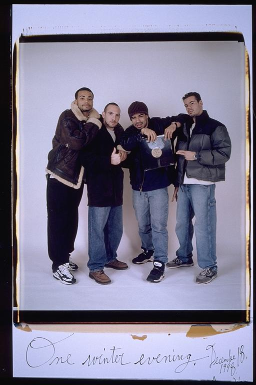

Pals: Boys Who Grew Up Together
elsadorfman.com/pals
Aldo: This picture is one of my favorites, and I have a big copy at my house. This picture to me looks like we were doing a magazine shoot. Different facial expressions, but still, the picture seems to work quite nicely. The record Casey is holding is his own, so it was also important from a group standpoint to show off Casey's hard work. His record -- alright Casey.

elsad@comcast.net